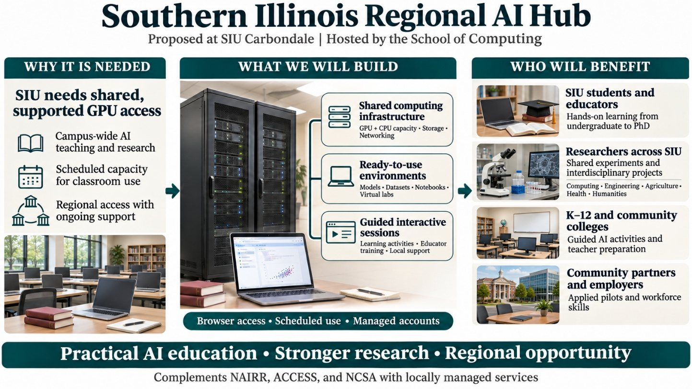

National resources take planning
NAIRR, ACCESS, and NCSA require eligibility checks, allocation requests, and onboarding, with varying timelines.
Shared GPU computing, ready-to-use learning environments, and hands-on support for SIU, K–12 schools, community colleges, and community partners across southern Illinois.
SIUC seeks federal support to create a regional AI hub that combines shared GPU computing with prepared environments, guided activities, and technical support. Users can move from introductory AI literacy to model development and advanced research, and connect to national resources as their needs grow.

NAIRR, ACCESS, and NCSA require eligibility checks, allocation requests, and onboarding, with varying timelines.
Outages on NAIRR-supported platforms have disrupted SIUC classes. Local control lets us schedule around teaching.
Schools and colleges need guided learning, educator training, and environments they can return to each term.
Six connected components, from the hardware in the data center to the people who help users succeed.
Acquire and install GPU servers, supporting CPU and memory capacity, research storage, backup systems, networking, and management servers. Complete electrical, cooling, and rack improvements identified through a site assessment. Support model training, fine-tuning, inference, data preparation, simulation, and isolated virtual laboratories according to workload needs.
Develop a browser-accessible entry point where campus and regional users can select activities, launch workspaces, reserve sessions, and obtain help. Provide accounts, scheduling, and resource quotas to manage capacity across School of Computing, campus, and regional uses.
Prepare reusable workspaces with software, models, datasets, instructions, and exercises already configured. Offer no-code demonstrations for beginners, interactive notebooks for learners developing programming skills, and configurable environments for advanced users. Enable users to save work and reset activities.
Develop self-paced and facilitated sessions on AI fundamentals, responsible use, data analysis, model behavior, and application development. Provide instructor guides, lesson plans, and assessment activities. Learners could change training examples and compare model performance or examine errors in AI-generated responses.
Provide locally hosted AI services and controlled environments for advanced model evaluation, agent experimentation, and cybersecurity research. Separate experimental workloads from production systems and general learning sessions. Support reproducible project workspaces and secure management of approved research data.
Support technical administration, instructional development, educator training, and partner coordination during implementation. Offer remote and on-campus sessions, onboarding assistance, and opportunities for teachers and community college instructors to reuse activities with their own classes.
From first-year students to doctoral researchers, and from K–12 classrooms to regional employers.
Students in Artificial Intelligence+, Computer Science, Information Technology, Cybersecurity Technology, and related graduate and certificate programs would be major users. The hub would support coursework, capstones, and research from undergraduate through doctoral study. Students would gain practical experience developing AI applications, evaluating models, analyzing data, and securing computing systems without needing to own powerful computers.
Course mapping: Appendix A →Faculty, staff, and students across SIUC could request access for research, teaching, professional learning, and approved applied projects. School of Computing research would include trustworthy AI, computer vision, medical imaging, bioinformatics, spatial intelligence, and cybersecurity. Other units could use the hub for discipline-specific data analysis and AI applications, including agriculture, engineering, environmental science, and computational humanities. Shared workspaces would support theses, dissertations, reproducible studies, and interdisciplinary collaboration.
Research mapping: Appendix B →SIUC instructors, K–12 teachers, and community college educators would receive ready-to-teach activities, configured software, instructor guides, and assistance. Guided sessions and educator training would help them adapt and reuse materials independently. This support would reduce technical setup demands and extend AI learning into computing courses and other subjects.
Students in southern Illinois schools would participate in age-appropriate, educator-supervised activities using prepared datasets and controlled environments. Exercises would introduce how AI learns, why it makes mistakes, and how to evaluate its outputs responsibly. Remote sessions and teacher-led classroom use would broaden participation and introduce pathways into computing and other STEM fields.
Regional community colleges could use the hub for introductory AI instruction, applied technical courses, and workforce training. Guided labs and advanced workspaces would accommodate different levels of programming experience. Reusable materials and coordination with SIUC could support transfer preparation and continuing education through partner arrangements.
Businesses, nonprofits, public agencies, and other community organizations could explore practical AI applications through demonstrations, workshops, and supervised projects. Participants would assess usefulness and limitations before broader adoption. Employers would benefit from graduates with practical AI skills, while partner projects would connect regional needs with student learning and faculty expertise.
Implementation would begin with facility and workload assessments, partner consultation, and service planning, followed by installation, environment development, pilot use, and expansion.
Facility and workload assessments, partner consultation, and service planning.
GPU servers, storage, networking, and the electrical, cooling, and rack improvements identified in the site assessment.
Prepared workspaces with software, models, datasets, exercises, and instructor materials.
Initial pilots selected with instructors and research teams based on readiness and available capacity.
Broader adoption drawing on the course and research mappings in Appendices A and B.
To be refined with partners and staffing plans
The course and research mappings in Appendices A and B provide a broader pool for phased adoption.
The School of Computing would coordinate the hub with campus IT, facilities, research administration, participating academic units, and regional partner representatives. Service policies would define responsibilities, project eligibility, data handling, and capacity allocations. Scheduled teaching capacity would be planned alongside research and regional use. Regional participants would join through institutional onboarding or organized cohorts, with K–12 participation coordinated through educators.
Evaluation would track campus and regional participation, repeat use, course and research adoption, learning outcomes, project completion, service reliability, and resource utilization. User and partner feedback would guide improvements to activities and support.
Before full operation, the hub would establish a plan for continuing staffing, maintenance, partner support, and equipment renewal. Coordinated purchasing, reusable content, and monitoring of energy consumption and demand would support responsible resource use. Future SIU System participation could be developed through shared activities and access agreements.
One-time acquisition and installation costs.
| Category | Amount |
|---|
Final configurations depend on competitive quotes. Recurring staffing and operations are funded separately. Full justification is in the proposal PDF.